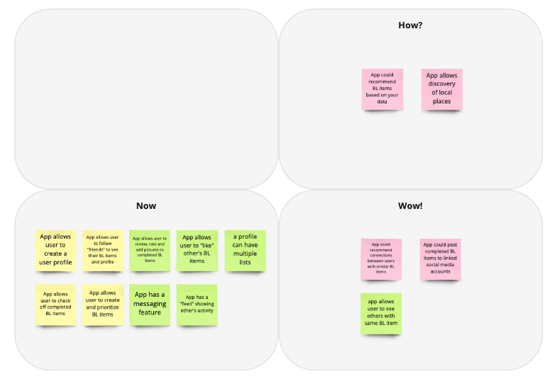
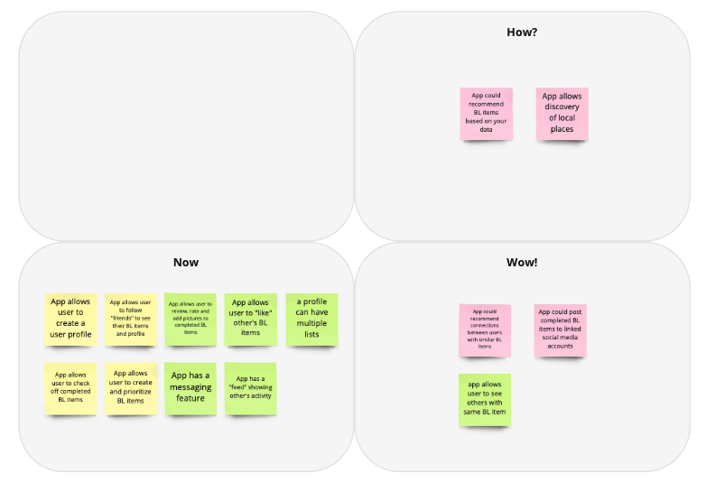
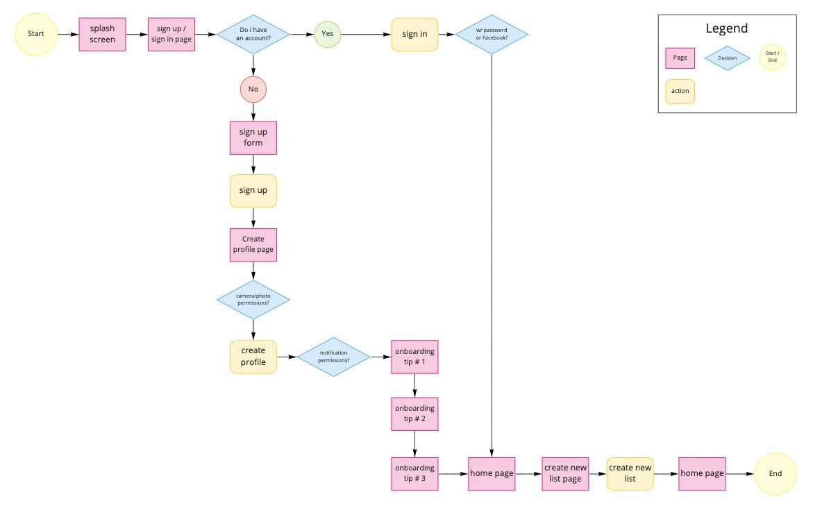

Travel App Case Study
Product, UX, and UI Designer
The Problem
Adventurous people with big travel dreams need a way to discover, prioritize, and share the items on their bucket list in order to organize goals, connect with like-minded peers, and gain inspiration for future trips.
The Solution
A mobile application that allows the user to create, search, and share bucket list goals. Then notify their online community when these goals are completed.
The User
Young Millennials with big travel dreams, who wants to share and receive travel inspiration.
The Goal
To create a tool that would help travelers book their next vacation. I conducted research, discovered an opportunity, then built a prototype for usability testing over the course of 4 weeks. This project started with a broad goal and required inductive reasoning to find a problem and solution.
The Process
Empathize / User Research
I did some initial research and found that the demographic who travels the most were Millenials between the ages of 23 and 38, so I decided to focus on this group. I created a proto-persona based on my assumptions of the potential user. Next I developed a research and interview plan to discover customer needs - This involved 5 interviews and a survey on social media. I wanted to see what motivated people to travel, how often they did it, and what their process was like for planning.
I synthesized all of the insigns that I gathered based on the naturally occurring themes, creating this affinity diagram.

Define
While doing my research I learned that this demographic likes to be active and have new experiences that they can share on social media. Several participants mentioned wanting to cross items off of their bucket list. I noticed that most of these people got their travel inspiration from social media, like Instagram and the survey showed that 73% of their travel was for pleasure. With these findings I created a user persona and empathy map.


“I use social media to inspire my travel plans” - Vanna
Ideation
After learning about the potential user needs, I jotted down some ideas of how an application could help solve them. I used the "I like, I wish, what if" method to brainstorm features, then the "how, now, wow" method to prioritize the features.
 

My value proposition was a mobile application that allows the user to create a profile where they can add items to their bucket list. Users can share goals and accomplishments with their peers. Next I created a storyboard and user journey map to illustrate how this might work.

“I have a bucket list of spots in mind that I’d like to travel to.” - Chris
Prototyping
While creating a competitor analysis I found another app called Bucket that is similar, but it didn't allow users to create lists in different categories, so I moved forward with the assumption that this product can add value and differentiate itself by allowing users to create multiple lists with different catagories for similar goals. Here is a user flow showing how the application will work.
Once I had the user flow, I sketched wireframes and transfered them to Figma, where I created a lo-fi clickable prototype.
Testing
I created a testing plan then I conducted 5 user feedback sessions over Zoom. I made an affinity diagram from the user insights and then moved the opportunities to a 2x2 matrix that compared the priority for customers and the business to help me decide what I should change in the next iteration.


The results from the tests were clear to me. The onboarding process lacked clarity, causing confusion to users. I also needed to deactivate the state of some buttons when they are not useable. I followed Apple’s Human Interface Guidelines to create the next iteration of the prototype. Then I did a round of usability testing - this led me to switch the Sign Up and Sign In buttons, change the order of items on user posts, widen user input fields and more.
Finally, I created a style guide and applied the styles to create hi-fi mockups:
Conclusion
I started this project without any direction because I wanted to let the interviews guide the problem and solution. In the beginning, I was a bit overwhelmed with how broad the scope was and it was a challenge to draw conclusions from the data while working alone. I feel like I had a breakthrough by having a brainstorming session with a TA from my UX/UI class at Georgia Tech. They were able to help me recognize some patterns in the data that I was not able to see while working alone. This is where the idea for a bucket list app came from.
Through this process, I learned how valuable collaboration is. Design thinking is difficult to do alone, getting feedback from other people who have a different viewpoint than you is a necessity. While so many of the people that I interviewed had the same pain points and goals, it was not always easy to decipher what that meant. Sometimes finding the problem is more difficult than creating a solution.
I found the usability testing to be extremely helpful, with only 5 tests I was able to see shortcomings in my design that I was able to fix in a day. My prototypes only covered sign up and sign in as well as onboarding, viewing the Home page and creating lists. There are many other features that need to be explored. I really only scratched the surface with what I learned and created here.